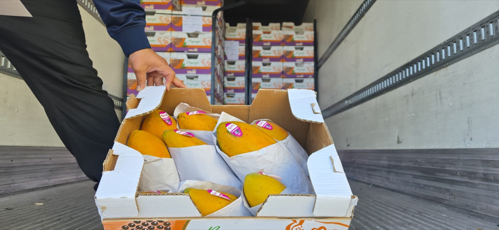
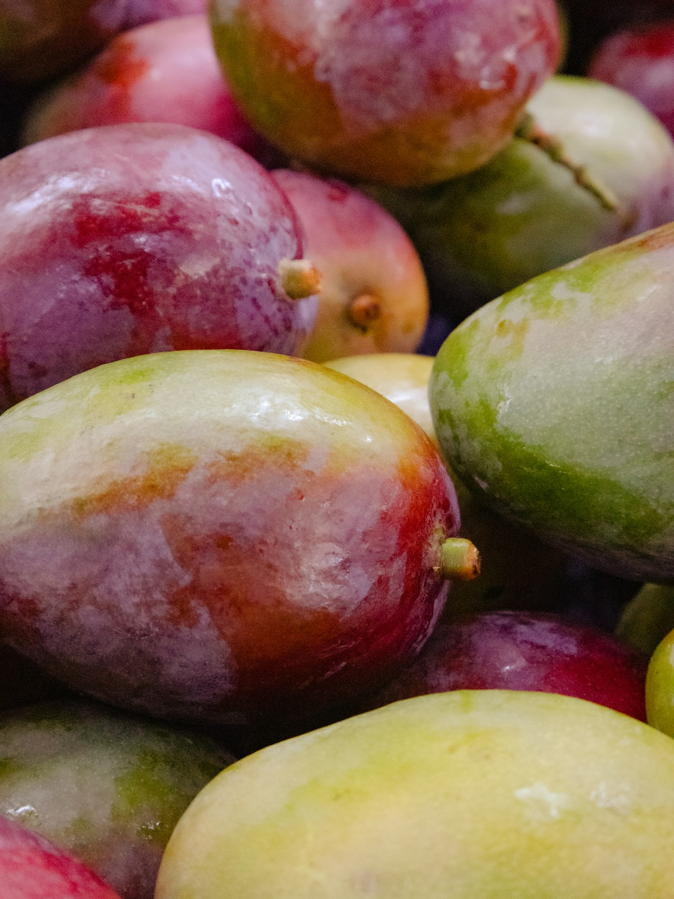
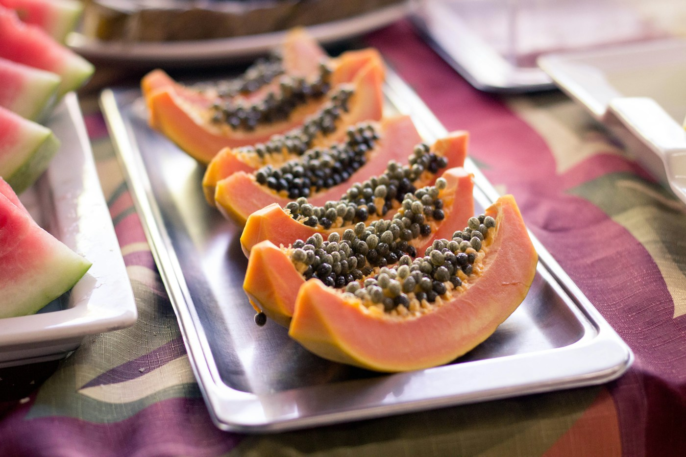
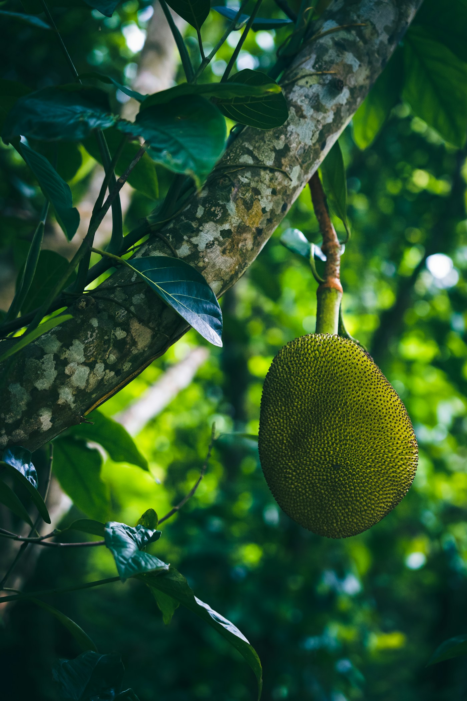

Fresh fruit sourcing
Product programs rooted in Mexican growing regions and supported by trusted partners.
From the growing regions of Mexico to our Oakland location, we bring produce, people, and opportunity together.
A quick look inside Artex and the care that goes into preparing fruit for its next destination.
More about Artex ↗
Behind every fruit is the work of growers, field teams, packers, logistics partners, and the people who bring it to market. Artex Produce connects those efforts across borders.
Based in Oakland, we serve wholesale buyers, retailers, distributors, and food service teams with clear communication and practical product knowledge.
Meet our supply network ↗
40 lb case
$34.50 / case
35 lb case
$28.75 / case25 lb carton
$26.90 / case
Single fruit case
$41.00 / caseBrowse freely. Accounts and pickup orders will be available when the store launches. Prices are sample data for this review.
We work with experienced partners to help buyers find the right product and presentation.
Product programs rooted in Mexican growing regions and supported by trusted partners.
Preparation and packaging that reflect the needs of different buyers and markets.
Local communication, order planning, and convenient store pickup.
Our company story highlights allied operations that bring experience in growing, packing, and exporting fruit.
Fruit production and export experience in Tepic, Nayarit.
Mango selection, classification, and packing.
Papaya production, packing, and export capabilities.
Products and prices are open to everyone. When you're ready to order, create an account or sign in, choose a pickup time, and wait for our team to confirm your request.
409 2nd St
Tell us what you like and what you would change before the site launches.
Send your feedback ↗